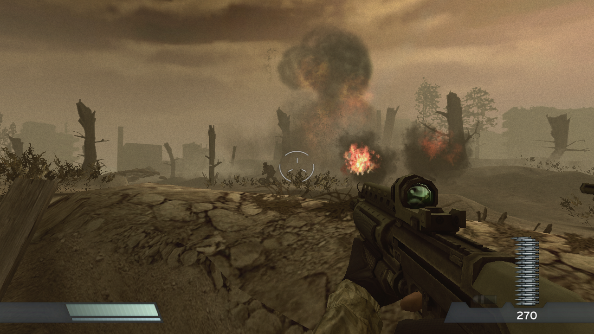
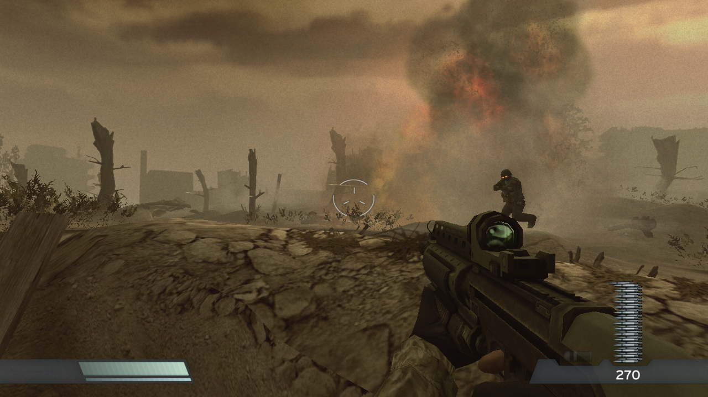
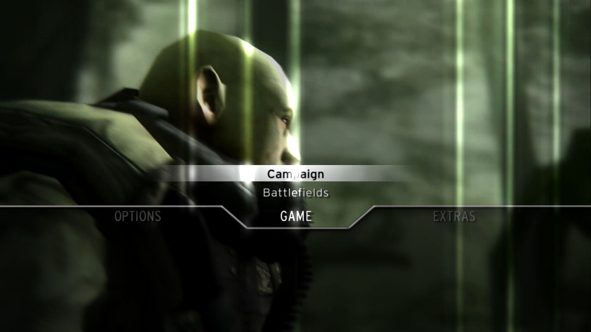
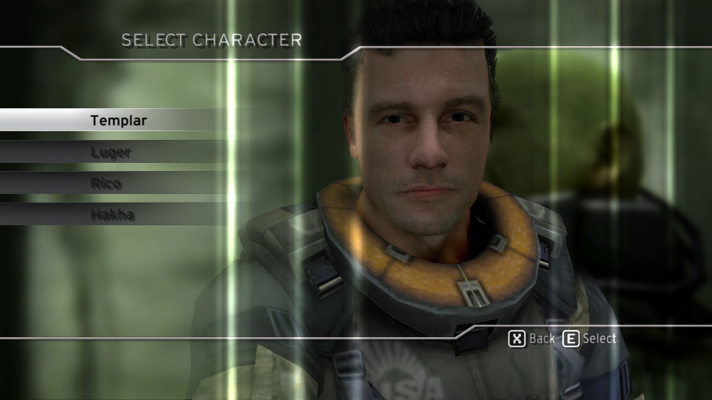

Unofficial PC port · work in progress
Killzone HD, native on PC
Project Vekta runs the PS3 remaster of the first Killzone as a native Linux or Windows program. The game's own PowerPC and Cell SPU code is translated to C++ ahead of time with ps3recomp and compiled on your machine; the PS3's system software is reimplemented around it, and the graphics are replayed on Vulkan. It is not an emulator and not a rewrite.
You need your own copy of the game. This project contains only the port: code, patches, tools and documentation. No game code, data, assets, keys or firmware are included or downloaded.
Status
As of 2026-10-30, Linux x64 with an RTX 3070 Ti (the maintainer's machine).
| Area | State | Notes |
|---|---|---|
| Boot, menus, movies, saves | works | intro movies, front end, options, pause, Continue |
| Level 1 | works | played by hand from start to end |
| Levels 2 to 11 | partial | all load and reach gameplay; not each played to its end |
| Frame rate | 60 fps | steady by default; optional 144 Hz mode at about 131 to 134 fps |
| Sound | works | stereo, 5.1 and 7.1; music through the firmware's MP3 decoder |
| Windows | partial | cross-built exe runs under Wine, Proton and on Windows; campaign not checked there |
| Installer | not yet | build from source for now |
Screens
Captured from the port on 2026-10-30 (Linux, headless run, 1280x720).




PC features
All optional, on a PC page inside the game's own Options and Pause menus:
- Window, borderless or fullscreen; any resolution; internal resolution scale
- V-Sync, VRR and a 30, 60 or 144 fps limit (the game clock follows)
- AMD FSR 1 upscaling with RCAS sharpening; anisotropic filtering up to 16x
- Widescreen Hor+ for 21:9, 32:9 and wider; field of view; HUD size and position
- Presets: Original (PS3), Performance, Balanced, Quality
- Keyboard and mouse with direct mouse look, mouse in menus, remappable keys
- Xbox, PlayStation, Nintendo and generic controllers, with button prompts that follow the device
- Stereo, 5.1 or 7.1 sound; game language; skip the opening movie
- Local trophies, read from the game's own trophy set
Roadmap
- Translated, booting, menus and movies, Level 1 playable
- 60 fps by default, an optional 144 Hz mode, the PC options page
- Windows exe (cross-built), tested under Wine, Proton and on Windows
- Levels 2 to 11 played to their end and checked against the PS3
- An installer that builds the port on the player's PC from their own game
- A steady 144 fps; post-processing toggles; HDR; FSR 3.1 and DLSS
- Working with the Killzone 2 and Killzone 3 ports toward the trilogy